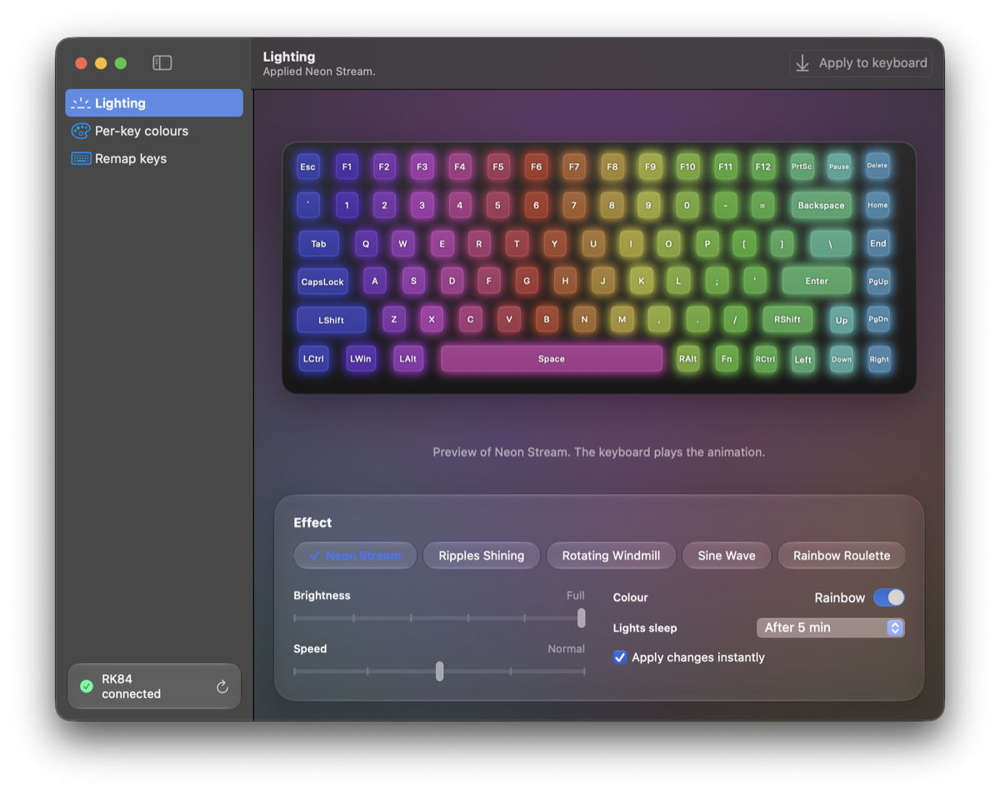
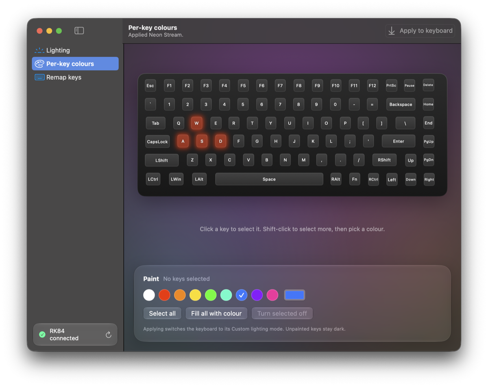
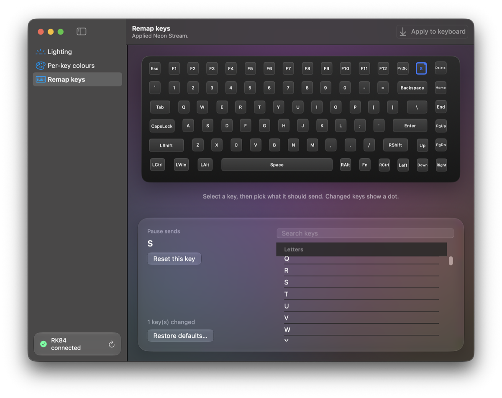

macOS · Reverse Engineering
An unofficial macOS app and command-line tool for configuring Royal Kludge keyboards, starting with the RK84 RGB. The vendor ships only a Windows app; Keylume gives Mac users the same lighting and key-remapping in a native app with a Liquid Glass design.
Royal Kludge keyboards ship with a Windows-only configurator, so on a Mac there is no supported way to change the lighting, paint individual keys, or remap them. Keylume closes that gap with a native macOS app, plus a command-line tool, that drives the keyboard over its USB cable.
The interesting part is that none of this is documented. The protocol was recovered by statically analysing the vendor's Windows app with REA and rizin, then rebuilt from scratch: settings are sent as 65-byte HID feature reports, and the packet builder is covered by byte-exact unit tests so a change to the format fails a test rather than a keyboard. Everything is verified on real RK84 RGB hardware, and the app never reads keystrokes, only sends settings.
It is split cleanly: a pure, unit-tested core builds the packets and talks to the hardware through IOKit, a CLI exposes it for scripting and dry runs, and a SwiftUI app wraps it for everyday use. Tagged releases are built into a universal Apple silicon and Intel app by GitHub Actions.
Keylume is an independent, unofficial project and is not affiliated with, endorsed by, or sponsored by Royal Kludge. The names are used only to describe compatibility.
Highlights
All 19 built-in effects, with brightness, speed, a solid colour or rainbow, and a sleep timer, plus an animated preview. Changes apply to the keyboard instantly.
Paint individual keys and write them to the keyboard's Custom mode, with select-all and fill-all to work quickly.
Any key can send another key, a modifier, a media key, or nothing at all, and a single click restores the stock layout.
A SwiftUI app for everyday use and a command-line tool for scripting, including a dry-run mode that prints the raw HID reports instead of sending them.
The undocumented format was recovered from the vendor's Windows app with REA and rizin, rebuilt as 65-byte HID feature reports, and locked in with byte-exact packet tests.
The keyboard cannot report its current settings, so the app saves them locally and shows what you last applied.
The app
A native SwiftUI interface with a live keyboard preview, built to feel at home on macOS.

Lighting: all 19 effects with brightness, speed, colour or rainbow, and a sleep timer, over an animated preview.

Per-key colours: paint individual keys and write them to the keyboard's Custom mode.

Remap keys: send another key, a modifier, a media key, or nothing, with a searchable picker.
Approach
Statically analyse the vendor's Windows app with REA and rizin to work out how it talks to the keyboard, and write down what is verified and what is inferred.
Reconstruct the settings as 65-byte HID feature reports in a pure core (KeylumeKit) covered by byte-exact unit tests.
Send the reports over the USB cable through IOKit, requesting only the Input Monitoring permission macOS requires to reach a keyboard.
Wrap the core in a SwiftUI app for everyday use and a CLI for scripting and dry runs, both on the same tested foundation.
Confirm lighting, sleep timer, per-key colours, remapping, and restore-defaults on a real RK84 RGB.
Build a universal Apple silicon and Intel app from a version tag with GitHub Actions and publish it as a downloadable zip.
At a glance
Download a build, or read the source, the packet tests, and the protocol notes on GitHub.